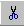

- Выделите ячейки, которые нужно переместить или
скопировать.
- Наведите указатель на границу диапазона.
- Чтобы переместить ячейки, перетащите диапазон к
левой верхней ячейке области вставки. Все данные,
содержащиеся в области вставки, будут замещены.
- Чтобы скопировать ячейки, при перетаскивании
удерживайте клавишу CTRL.
- Чтобы вставить ячейку, при перетаскивании
удерживайте клавиши SHIFT (для перемещения) или
SHIFT+CTRL (для копирования).
- Чтобы перетащить диапазон на другой лист,
удерживайте клавишу ALT.
- Чтобы переместить или скопировать ячейки в
другую книгу или в отдаленное место, выделите
ячейки и щелкните кнопку Вырезать для перемещения или команду
Копировать для
копирования. Перейдите на другой лист книги,
укажите левый верхний угол области вставки, а
затем щелкните кнопку Вставить
 .
.
Назад | Содержание | Вперед